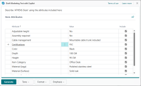

Marketingtext zu Artikeln hinzufügen
Sie können für jeden in Business Central registrierten Artikel Marketingtext über den Artikel schreiben. Obwohl Marketingtext eine Art Beschreibung ist, unterscheidet er sich vom Feld Beschreibung des Artikels. Das Feld Beschreibung wird normalerweise als prägnanter Anzeigename verwendet, um das Produkt schnell identifizieren zu können. Der Marketingtext hingegen ist ein umfassenderer und detailreicherer Schritt. Durch ihn sollen Marketing- und Werbeinhalten, sogenanntes Textmaterial, hinzugefügt werden. Dieser Text kann dann mit dem Artikel veröffentlicht werden, wenn er in einem Webshop wie Shopify veröffentlicht wird, oder er kann in E-Mails oder andere Mitteilungen an Ihre Debitoren eingefügt werden.
Es gibt zwei Möglichkeiten, Marketingtext zu erstellen. Am einfachsten gelingt der Einstieg mit Copilot, das Ihnen KI-generierten Text vorschlägt. Die andere Möglichkeit ist, den Text von Grund auf selbst zu verfassen.
<a name=copilot>Vorschläge für Marketingtexte mit Copilot abrufen
Copilot bietet Ihnen schnell einen Textvorschlag an, der automatisch für Sie generiert wird. Der KI-generierte Text ist auf den Artikel zugeschnitten und bietet einen guten Ausgangspunkt. Der Text basiert zum Teil auf den folgenden Informationen:
- Für den Artikel festgelegte Attribute, z. B. Beschreibung, Farbe, Dimensionen, Material usw. Erfahren Sie mehr über Artikelattribute.
- Das Feld Beschreibung des Artikels.
- Die Artikelkategorie. Erfahren Sie mehr über das Kategorisieren von Artikeln.
- Auswählbare Einstellungen zum Stil wie Tonfall, Format und Länge.
Copilot soll Ihnen Zeit sparen und Ihnen dabei helfen, kreative und ansprechende Texte zu schreiben, die Ihre Marke widerspiegeln und über Ihre gesamte Produktlinie hinweg konsistent sind. Erstellen Sie zunächst einen Vorschlag und ändern Sie ihn dann nach Bedarf.
Verfügbare Sprachen
Diese Copilot-Funktion wurde validiert und wird nur in den folgenden Sprachen unterstützt:
| Sprache | Gebietsschema |
|---|---|
| Englisch (USA) | en-AU, en-CA, en-GB, en-IE, en-IN, en-NZ, en-PH, en-SG, en-US, en-ZA |
| Französisch | fr-FR, fr-BE, Fr-CA, fr-CH |
| Deutsch | de-DE, de-AT, de-CH |
| Spanisch | es-ES, es-MS, es-CO, es-PE |
| Dänisch | da-DK |
| Niederländisch | nl-NL, nl-BE |
| Italienisch | it-IT, it-CH |
| Japanisch | ja-JP |
Obwohl es in anderen Sprachen verwendet werden kann, funktioniert es möglicherweise nicht wie vorgesehen. Die Sprachqualität kann je nach Benutzerinteraktion oder Systemeinstellungen variieren, was sich auf die Genauigkeit und das Benutzererlebnis auswirken kann.
Voraussetzungen
Das Feature für Marketingtextvorschläge ist in Ihrer Umgebung aktiviert. Die Aufgabe wird normalerweise durch einen Administrierenden erledigt. Weitere Informationen finden Sie unter Copilot- und KI-Funktionen konfigurieren.
Einen ersten Entwurf mit Copilot erstellen
Gehen Sie wie folgt vor, um Marketingtext zu einem vorhandenen Artikel hinzuzufügen. Informationen zum Erstellen eines neuen Artikels finden Sie unter Neue Artikel registrieren.
Öffnen Sie in Business Central den Artikel, den Sie ändern möchten, und gehen Sie dazu wie folgt vor:
Wählen Sie in der oberen rechten Ecke die
 aus, geben Sie Artikel ein und wählen Sie dann den dazugehörigen Link aus, um eine Liste der verfügbaren Artikel aufzurufen.
aus, geben Sie Artikel ein und wählen Sie dann den dazugehörigen Link aus, um eine Liste der verfügbaren Artikel aufzurufen.Machen Sie einen Doppelklick auf den Artikel oder wählen Sie in der Spalte Nr. seinen Wert aus .
Von der Artikelkarte aus gibt es zwei Möglichkeiten, mit dem Schreiben von Marketingtexten mit Copilot zu beginnen: über die Infobox Marketingtext oder die Aktion Marketingtext. Diese Methoden sind in der folgenden Abbildung einer Artikelkarte dargestellt.
Um den ersten Entwurf für einen Artikel zu erstellen, ergreifen Sie einen der folgenden Schritte:
Wählen Sie im Bereich Marketingtext in der Infobox rechts auf der Seite Entwurf mit Copilot aus.
Copilot beginnt damit, einen Entwurf eines Marketingtexts zu erstellen.
Wählen Sie oben auf der Seite die Aktion Marketingtext und dann Entwurf mit Copilot im Fenster Marketingtext bearbeiten aus. Das Fenster Marketingtextentwurf mit Copilot wird angezeigt und listet alle verfügbaren Attribute für den Artikel auf.
Wählen Sie die Attribute aus, auf denen Copilot Vorschläge basieren soll, und wählen Sie dann Generieren aus. Sie können die ausgewählten Attribute und anderen Optionen später ändern. Copilot beginnt damit, einen Entwurf eines Marketingtexts zu erstellen.

Wenn Copilot den Entwurf fertigstellt, wird der Text im Copilot-Editorfenster angezeigt, wo Sie ihn überprüfen und bearbeiten können.
Sie können jetzt weitere Vorschläge erhalten, die erhaltenen Vorschläge verbessern, Text bearbeiten und vieles mehr. Weitere Informationen finden Sie unter Überprüfen, bearbeiten und speichern.
{kind=link}
{kind=link}
Text überprüfen, bearbeiten und speichern
Sobald Sie den ersten Entwurf haben, müssen Sie ihn überprüfen und ändern, um ihn für die Veröffentlichung vorzubereiten. Diese Arbeit wird vom Copilot-Editor erledigt, mit dem Sie weitere Vorschläge abrufen, Einstellungen ändern, um die Vorschläge beeinflussen können, und den Text manuell zu ändern und zu formatieren.
Wichtig
Der KI-generierte Text von Copilot ist nur ein Vorschlag und kann Fehler enthalten. Er muss von einem Menschen überwacht und überprüft werden, um sicherzustellen, dass er richtig und angemessen ist. Überprüfen Sie jeden vorgeschlagenen Text und bearbeiten Sie ihn nach Bedarf, bevor Sie ihn speichern und veröffentlichen.
Verwenden Sie die folgenden Richtlinien, um den Marketingtext fertigzustellen und zu speichern.
- Nehmen Sie Änderungen am Text direkt im Textfeld vor. Verwenden Sie die Symbolleiste am unteren Rand des Felds, um Text zu formatieren und zu gestalten, Links hinzuzufügen und mehr.
- Um einen neuen Vorschlag zu erhalten, wählen Sie Erneut generieren aus.
Wenn Sie mit den Vorschlägen nicht zufrieden sind, erweitern Sie die Textvorschläge mithilfe der Präferenzoptionen Ton, Format und Betonung.
Richtlinien zur Verbesserung von Vorschlägen finden Sie unter Textvorschläge verbessern und anpassen.
Um durch die Vorschläge zu blättern, verwenden Sie die vorherigen und nächsten Links oben auf der Seite (x von y).
Überprüfen Sie den Text sorgfältig auf Genauigkeit und Angemessenheit:
- Wenn Sie den Text speichern möchten, wählen Sie Behalten.
- Wenn Sie ihn nicht speichern möchten, wählen Sie die Schaltfläche „Verwerfen“ (Papierkorb)
 .
.
Textvorschläge verbessern und anpassen
Sie können einige Schritte unternehmen, um Textvorschläge zu verbessern und sie an Ihre persönlichen oder die Präferenzen Ihres Unternehmens anzupassen.
Ändern Sie die von Copilot verwendeten Artikelattribute.
Die Copilot-Vorschläge beruhen teilweise auf den dem Artikel zugewiesenen Attribute. Um die verfügbaren Attribute und aktuellen Einstellungen anzuzeigen, wählen Sie das „Bearbeiten“-Symbol
 in der oberen linken Ecke aus. Wählen Sie die Seite Artikelattribute aus, die am besten zu den Eigenschaften passen, die Sie hervorheben möchten. Je mehr relevante Attribute Sie einbeziehen, desto aussagekräftiger wird das Ergebnis. Wenn Sie das Gefühl haben, dass Ihnen einige entscheidende Attribute fehlen, fügen Sie weitere hinzu. Weitere Informationen über Attribute finden Sie unter Mit Artikelattributen arbeiten
in der oberen linken Ecke aus. Wählen Sie die Seite Artikelattribute aus, die am besten zu den Eigenschaften passen, die Sie hervorheben möchten. Je mehr relevante Attribute Sie einbeziehen, desto aussagekräftiger wird das Ergebnis. Wenn Sie das Gefühl haben, dass Ihnen einige entscheidende Attribute fehlen, fügen Sie weitere hinzu. Weitere Informationen über Attribute finden Sie unter Mit Artikelattributen arbeitenÄndern Sie Ihre Präferenzeinstellungen für die Optionen Ton, Format und Betonung.
Option Description Ton Verwenden Sie diese Option, um zu beeinflussen, welche Art von Wörtern, Phrasen und Satzzeichen verwendet werden, um die Zielgruppe anzusprechen. Sie haben die Wahl aus mehreren vordefinierten Tonfällen von Formell (dabei handelt es sich um einen geschäftlich klingenden Tonfall) bis zu Kreativ (der zu einem lässigen Text führt). Format und Länge Verwenden Sie diese Option, um die allgemeine Struktur des Textes zu steuern, die aus drei Teilen besteht, die von vier verschiedenen Optionen abgedeckt werden: - Slogan: Eine einprägsamer Formulierung oder ein kurzer Satz, der den Artikel oder die Marke identifiziert.
- Absatz: Ein einzelner Absatz mit fließendem und ausführlichem Text, der aus mehreren vollständigen Sätzen besteht.
- Slogan + Absatz: Ein Slogan gefolgt von einem Absatz
- Kurzfassung: Ein einleitender Satz, ähnlich einem Slogan, gefolgt von einer Aufzählung der wichtigsten interessanten Punkte.
Betonung Verwenden Sie diese Option, um aus einer Liste vordefinierter Eigenschaften auszuwählen, die Sie im Text hervorheben möchten. Wählen Sie eine Qualität, die am besten zu der Art des Artikels passt, über den Sie schreiben. Die Eigenschaften entsprechen nicht direkt den Attributen, der Beschreibung oder der Kategorie des Artikels. Zum Beispiel könnte Qualität sowohl für ein Fahrrad als auch für einen Schreibtisch eine gute Wahl sein, während Geschwindigkeit für ein Fahrrad geeignet wäre, aber nicht für einen Schreibtisch. Verbessern Sie das Feld Beschreibung auf der Artikelkarte.
Der Text im Feld Beschreibung wird an vielen Stellen im vorgeschlagenen Text unverändert verwendet. Daher ist es wichtig, dass die Beschreibung am besten wiedergibt, wie der Artikel im Marketingtext dargestellt werden soll.
Stellen Sie sicher, dass das Feld Artikelkategoriencode auf der Artikelkarte auf eine geeignete Kategorie eingestellt ist.
Copilot findet Wörter und Sätze, die sich auf die Kategorie beziehen, und arbeitet sie in den vorgeschlagenen Text ein.
Mit mehreren Sprachen arbeiten
Text wird immer in der Sprache generiert, die in Ihren Benutzereinstellungen festgelegt ist. Wenn Ihre Organisation mit einer anderen Sprache arbeitet und in dieser Daten in Business Central eingibt oder wenn Business Central mit Ihrem Online-Shop, z. B. Shopify, verbunden ist, kann es sein, dass Inhalte veröffentlicht werden, die nicht mit ähnlichen Marketinginhalten übereinstimmen.
Text von Grund auf neu erstellen
Öffnen Sie in Business Central den Artikel, den Sie ändern möchten, wie folgt:
- Wählen Sie in der oberen rechten Ecke die aus, geben Sie Artikel ein und wählen Sie dann den dazugehörigen Link aus, um eine Liste der verfügbaren Artikel aufzurufen.
- Um den Artikel zu öffnen, machen Sie einen Doppelklick darauf oder wählen Sie im Feld Nr. .
- Wählen Sie in der oberen rechten Ecke die
Führen Sie einen der folgenden Schritte aus:
- Wählen Sie im Bereich Marketingtext in der Infobox rechts auf der Seite Bearbeiten aus.
- Wählen Sie die Aktion Marketingtext aus.
- Nehmen Sie Änderungen am Text direkt im Feld Marketingtext vor. Verwenden Sie die Symbolleiste am unteren Rand des Felds, um Text zu formatieren und zu gestalten, Links hinzuzufügen und mehr.
- Wählen Sie OK aus, wenn Sie soweit sind, den Text zu speichern.
Siehe auch
Überblick über Vorschläge für Marketingtexte
Probleme mit Copilot- und KI-Funktionen behandeln
Häufig gestellte Fragen zu Vorschlägen für Marketingtexte
Copilot- und KI-Funktionen konfigurieren
Neue Artikel registrieren